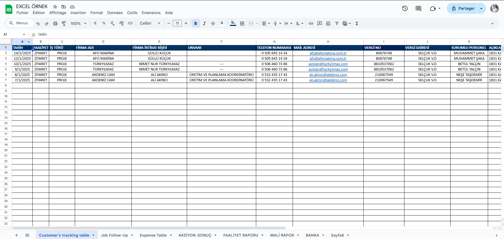

Les compétences
Gérer le patrimoine informatique
- Recenser et identifier les ressources numériques Lors de notre projet "maison du jeu", afin d'avoir une idée de comment faire le site (esthétiquement), nous avons d'abord parcouru d'autres sites qui fonctionnent, comme Netflix, les médiathèques de nos villes respectifs afin de comprendre comment des professionnels geraient ce genre de site qui met en avant une multitude de produit.
- Exploiter des référentiels, normes et standards adoptés par le prestataire Lors de notre dernier stage à la chambre de l'industrie, nous avons repris les normes et standards de leur site d'origine afin de proposer une amélioration en cohérence avec leurs choix de couleurs et de design.
- Mettre en place et vérifier les niveaux d’habilitation associés à un service Dans un premier temps, nous avons réalisé différents rôles pour le projet ministage, il y avait 4 profil : Réservation, Consultation, Programmation et Administration, nous avons donc évolué ce controle grâce au "grant user" du framework symfony. Nous avions aussi pour objectif de faire la même chose dans notre dernier stage mais le temps nous a fait défaut.
- Vérifier les conditions de la continuité d’un service informatique Lors d'ajout de nouvelles fonctionnalités, nous envoyons un guide qui est présent dès la connection sur son site.
- Vérifier le respect des règles d’utilisation des ressources numériques Lors de notre découverte du projet ministage, on a vu que les mots de passes apparaissaient en clair dans la BDD et qu'ils étaient aussi envoyé par mail.


Répondre aux incidents et aux demandes d’assistance et d’évolution
- Collecter, suivre et orienter des demandes Dès nos premiers projets, nous avons été confronté à ce problème qui est de collecter et de suivre l'avancement de chaque idée, nous avons d'abord utilisé "Trello
- Traiter des demandes concernant les applications Afin de traiter les demandes, nous établissons un order de priorité avec des labels
Développer la présence en ligne de l’organisation
- Participer à la valorisation de l’image de l’organisation sur les médias numériques en tenant compte du cadre juridique et des enjeux économiques Afin de valoriser l'image de notre première entreprise, ils envisagaient dans le future de proposer leur application aux écoles mais le problème des données personnelles ralentissait cette idée Ainsi nous avons proposer au reste de notre classe et à nos familles de créer un compte et de tester l'application afin d'avoir des retours.
- Référencer les services en ligne de l’organisation et mesurer leur visibilité. Les entreprises ayant une présence sur FaceBook, Linkedin et des sites internet, nous avons décidé de remercier les entreprises nous ayant acceuilli en faisant un post Linkedin afin de les supporter dans leur communication.
- Participer à l’évolution d’un site Web exploitant les données de l’organisation Durant le projet de notre seconde année au BTS SIO, nous avons pu accéder à la base de donnée de celle-ci afin de réaliser des tests et de voir nos améliorations de manière concrètes.

Travailler en mode projet
- Analyser les objectifs et les modalités d’organisation d’un projet Pendant notre stage en Turquie, nous avons du créer notre cahier des charges comme peu de personne parlait anglais et expliquer le concept de rêgle métier à l'aide de traduction n'a pas eu l'effet escompté.
- Planifier les activités Suite à la réalisation du MCD, de l'architecture et d'un diagramme d'état, nous avons réussi à établir un order de prioriter des tâches.
Mettre à disposition des utilisateurs un service informatique
- Accompagner les utilisateurs dans la mise en place d’un service Afin d'aider Beryl, notre cliente turc, nous avons mis en place des réunions pour lui expliquer notre travail, ainsi nous avons réaliser un diagramme d'état afin d'expliquer simplement les fonctionnalités.
Organiser son développement professionnel
- Mettre en place son environnement d’apprentissage personnel Pour commencer J'utilise l'éditeur de logiciel JetBrains auquel je bénéficie gratuitement grâce à mon lycée. J'utilise GitHub ou framagit afin de retrouver mes projets à partir de n'importe quel endroit. Pour ce qui est de la planification, j'utilise les issues qui m'envoient un mail à chaque modification, rappel ou cloture de ticket. De plus afin de me préparer à travailler à l'internationale, j'ai demandé aux professeurs de relancer le projet Erasmus il y a plus d'un an. Et j'ai pu grâce au travail de mes professeurs et leur contact, voyager en Turquie.
- Mettre en œuvre des outils et stratégies de veille informationnelle J'ai mis en place de manière sérieuse une startégie de veille informatique depuis ma rentrée au BTS SIO J'utilise Google Alert qui chaque semaine trouve entre 1 et 10 nouvelles à propos de l'informatique Je regarde aussi régulièrement la chaine Youtube Underscore qui parle de diverses choses informatique avec un regard semi-professionnel.
- Gérer son identité professionnelle Je gère mon identité professionnelle avec Linkedin que j'utilise afin de remercier les entreprises, étendre mon réseau, avoir une première approche professionelle.
- Développer son projet professionnel Je m'intéresse à mon parcours futurs et je choisis ce qui me convient le mieux J'ai récemment pu interviewer un étudiant de l'école de design de Nantes afin d'en apprendre plus sur son métier et ce qu'il voulait faire.